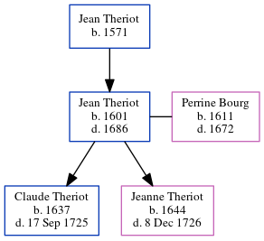

Jean Theriot 1601 - 1686
[ Home ] | [ Calendar ] | [ Surnames Index ] | [ Family History ]The child of Jean Theriot Jean Theriot, the 10 times great-grandfather of Michele Copp (née Phillips), was born in Loudun, Vienne, Poitou-Charentes, France in 16011 and married Perrine Bourg (with whom he had 2 children: Claude and Jeanne) in Loudon, Vienne, Poitou-Charentes, France in 16351.
He died in 1686 in Port Royal, Acadia, Nova Scotia, Canada.
Parents
- Jean was born in 1571
Children
- Claude was born in 1637
- Jeanne was born in 1644
Citations
- U.S. and International Marriage Records, 1560-1900 Online publication - Provo, UT, USA: The Generations Network, Inc., 2004.Original data - This unique collection of records was extracted from a variety of sources including family group sheets and electronic databases. Originally, the information was deriv
Family Tree
Generated by ged2site. Last updated on Jun 16, 2024